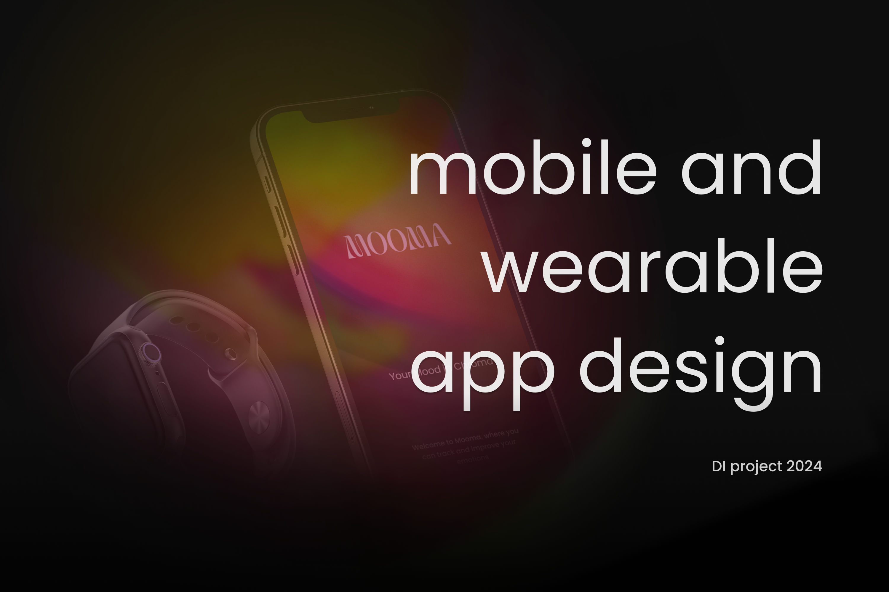
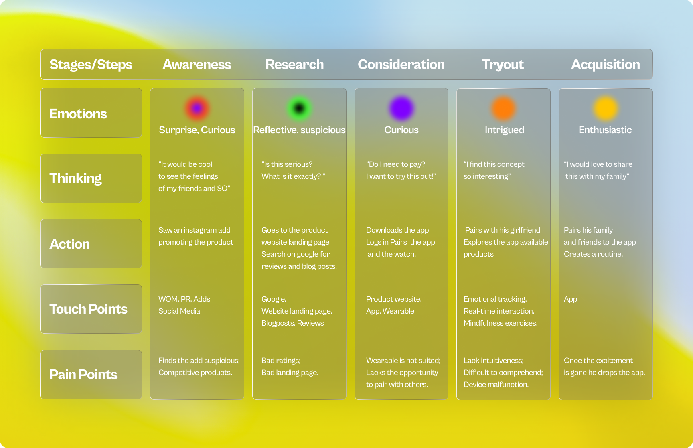
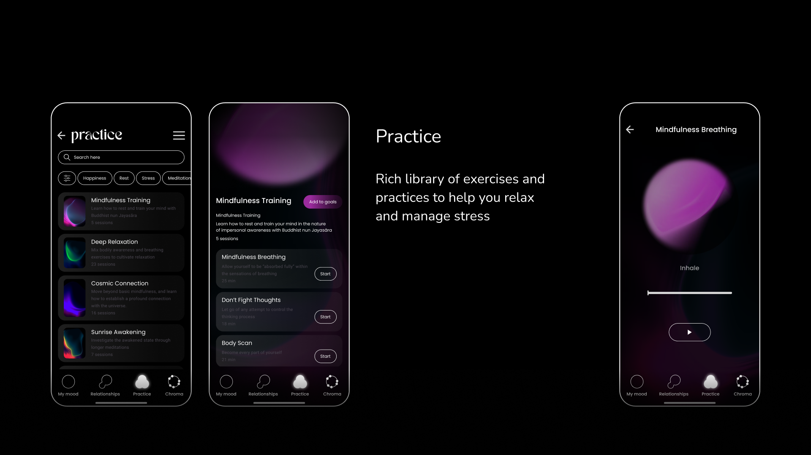

Travel Booking Experience
Product Designer • July 2024 - September 2024 • Berlin, Germany
Overview
End-to-end redesign of a travel booking platform, covering the entire journey from destination inspiration to post-booking management. The project focused on creating an emotional connection with travelers while streamlining complex booking flows.

The Challenge
Travel booking involves complex decision-making with multiple variables (dates, destinations, accommodations, budget). Existing platforms overwhelmed users with choices, leading to decision paralysis and abandoned bookings.
Project goals:
- Simplify the multi-step booking process
- Provide personalized recommendations
- Build confidence through transparent pricing and reviews
- Create a seamless experience across devices
User Research
Conducted diary studies with travelers during their booking process, identifying pain points and moments of delight. Users wanted inspiration, trust signals, flexible search options, and clear comparison tools.

Design Solution
The redesigned experience starts with inspirational content and flexible search, progresses through a streamlined comparison and filtering system, and concludes with a clear booking summary. Added features include saved trips, price alerts, and a visual trip timeline.

Impact
The redesign led to a 55% increase in completed bookings, 40% increase in mobile conversions, and a 30% reduction in customer service inquiries. User testing showed significantly improved confidence and satisfaction throughout the booking journey.
